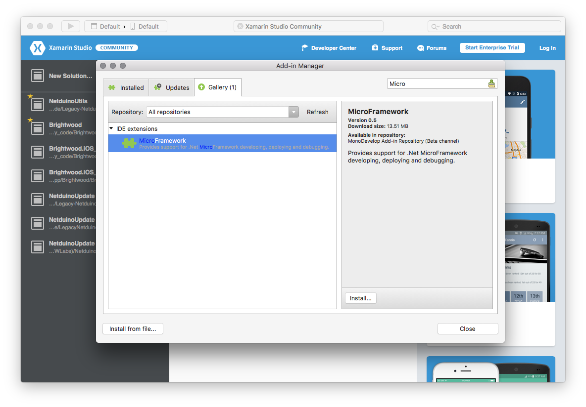

Getting Started with Netduino
Instructions for Netduino 2, 3, and Go! boards.
Installation
First, configure your development environment by installing the necessary software.
Windows
Download and run the following:
- .NET Micro Framework (NETMF) SDK (v4.3.2. QFE2)
- NETMF Plugin for Visual Studio (VS) 2015 or VS 2013
- Netduino SDK v5
Mac
Download and install the latest Xamarin Studio.
Launch Xamarin Studio and install the NETMF plug-in:
- Open the Xamarin Studio menu and select Add-ins….
- Select the Gallery Tab.
- In the search box, type
MicroFramework:  - Click install and follow the directions.
- Restart Xamarin Studio.
Make Sure the Board Firmware is Up to Date
Once your development environment is configured, make sure your board has the latest firmware on it. The firmware includes a customized .NETMF runtime specific to the board hardware. Firmware update instructions are here.
Create your First App
Xamarin Studio
-
Launch Xamarin Studio and create a new solution of type C# > MicroFramework > MicroFramework Console Applicaiton and name it whatever you want:

-
Double-click on the References folder in the Solution Pad and add: * Microsoft.Spot.Hardware * SecretLabs.NETMF.Hardware * SecretLabs.NETMF.Harware.Netduino (or NetduinoPlus if that’s what you’re using)
Visual Studio
-
Launch Visual Studio and create a new solution of type Visual C# > Micro Framework > Console Application and name it whatever you want:

-
Right-click on the References folder in the Solution Explorer and add: * Microsoft.Spot.Hardware * SecretLabs.NETMF.Hardware * SecretLabs.NETMF.Harware.Netduino (or NetduinoPlus if that’s what you’re using)
Add the Code
After you’ve created the project and configured the references, add the following code to your program.cs file. Not that you might want to modify the namespace declaration to match your projet’s name:
using System;
using Microsoft.SPOT;
using Microsoft.SPOT.Hardware;
using System.Threading;
using SecretLabs.NETMF.Hardware.Netduino;
namespace NetduinoBlink
{
public class Program
{
public static void Main()
{
// configure an output port for us to "write" to the LED
OutputPort led = new OutputPort(Pins.ONBOARD_LED, false);
// note that if we didn't have the SecretLabs.NETMF.Hardware.Netduino DLL, we could also manually access it this way:
//OutputPort led = new OutputPort(Cpu.Pin.GPIO_Pin10, false);
int i = 0;
while (true)
{
led.Write(true); // turn on the LED
Thread.Sleep(250); // sleep for 250ms
led.Write(false); // turn off the LED
Thread.Sleep(250); // sleep for 250ms
Debug.Print ("Looping" + i);
i++;
}
}
}
}
This code does the following things:
- It creates an OutputPort. An OutputPort allows you to “Write” to a pin, e.g. power it on or off.
- Loops forever, writing to the port on, then waiting 250ms, then turning it on.
- Prints to the Debug window the loop iteration it’s on.
Deploy
Xamarin Studio
-
Make sure your Netduino is plugged in. It should show up in the build bar at the top:

-
Hit the “>” button to deploy.
The app should deploy and after a moment, the LED should start blinking on the Netduino:

You should also see the debug output in the Application Output window:
Deploy: Deploying assemblies to device
Deploy: Deploying assemblies for a total size of 560 bytes
Deploy: Assemblies successfully deployed to device.
...
Looping0
Looping1
Looping2
Looping3
Visual Studio
-
Make sure your Netduino is plugged in.
-
Double-click on the Properties item in the Solution Explorer, select .NET Micro Framework on the left, and the under Deployment choose USB and in the Device drop down, choose your Netduino device:

-
Click the Start > button in the toolbar to deploy to yoru device.
The app should deploy and after a moment, the LED should start blinking on the Netduino: